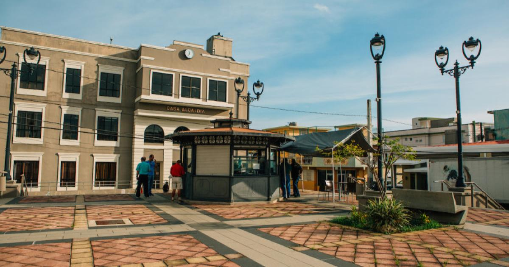

Parque La Cascada
Ampliando la oferta cultural y turística del pueblo y engalanando la entrada al Barrio Pueblo, al lado del centro comercial Plaza Encantada se ubica el emblemático Parque La Cascada, el cual constituye un nuevo ícono para los trujillanos. Rodeado de un hermoso espacio natural, cuenta con una impresionante fuente cascada con ocho chorros representativos a cada barrio e inspirada en uno de los cognomentos del pueblo, “La Ciudad de los Manantiales”. Así mismo, alberga un paseo tablado, una fuente de chorros para el disfrute de los visitantes con asientos en forma de anfiteatro y pérgola, un kiosco para la venta de comida, área para consumo, bancos, jardines paisajistas y estacionamiento.
Antigua Casa Alcaldía
Este edificio data de 1928, se utilizó hasta el 2006 como el Centro de Administración Municipal pero fue remodelado y reconstruido en el 2012. Dicha estructura, es dedicada a la memoria de la ex alcaldesa, Elsie Calderón Rodríguez. Actualmente, este edificio alberga las oficinas de Desarrollo Comunal, Servicios al Ciudadano, Vivienda, Alianza Municipal de Servicios Integrados y la Oficina de Servicios a Personas con Impedimentos
Pueden visitar en:
Embalse Río Grande de Loíza
El embalse cubre un área aproximada de 1,000 cuerdas de terreno en los barrios Carraízo y La Gloria de Trujillo Alto, Celada y Rincón de Gurabo y San Antonio, Río Cañas y Bairoa de Caguas. Se nutre de las aguas del Río Grande de Loíza y sus tributarios: el Río Caguitas, Bairoa, Cañas, Gurabo y la Quebrada Infierno, principalmente. La misma, cubre una superficie de 421.7 hectáreas y su capacidad es de 24.7 hectómetros cúbicos con una profundidad promedio de 8.5 metros y una máxima de 29.5 metros. Este embalse es el mayor de Puerto Rico, en cuanto a área de drenaje que cuenta con 533 kilómetros cuadrados (206 millas cuadradas). El mismo, sirve para el abastecimiento de agua del área metropolitana de San Juan. Su área de capacitación es de 797 kilómetros cuadrados.
Pueden visitar en:
Casa de la Cultura

Es un recinto donde convergen el pasado y el presente de Trujillo Alto a través de su historia. Este edificio, dedicado a la memoria del historiador trujillano Pedro Regalado Díaz Rivera (Don Tito), está ubicado en la calle Muñoz Rivera, en el mismo lugar que en décadas pasadas albergó la Casa de las Golondrinas. La estructura de dos niveles combina una arquitectura moderna con rasgos antiguos.En su interior está ambientado con piezas artísticas y un pequeño jardín que le da un toque de elegancia natural. Así mismo, cuenta con un anfiteatro, sala de exposiciones y sala interactiva, las cuales son el corazón de la Casa de la Cultura. Además, alberga las oficinas del Departamento de Educación, Arte, Cultura y Turismo.
Pueden visitar en: